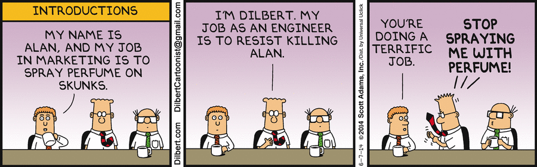
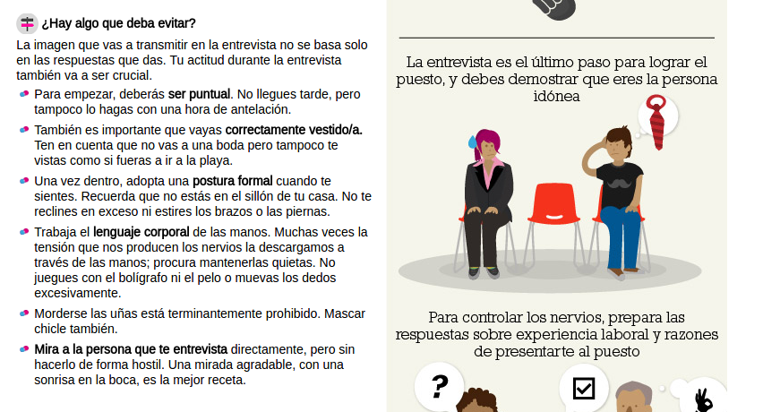
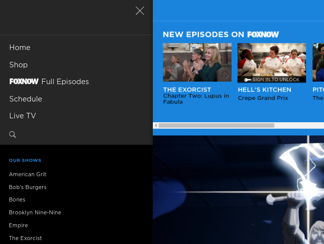
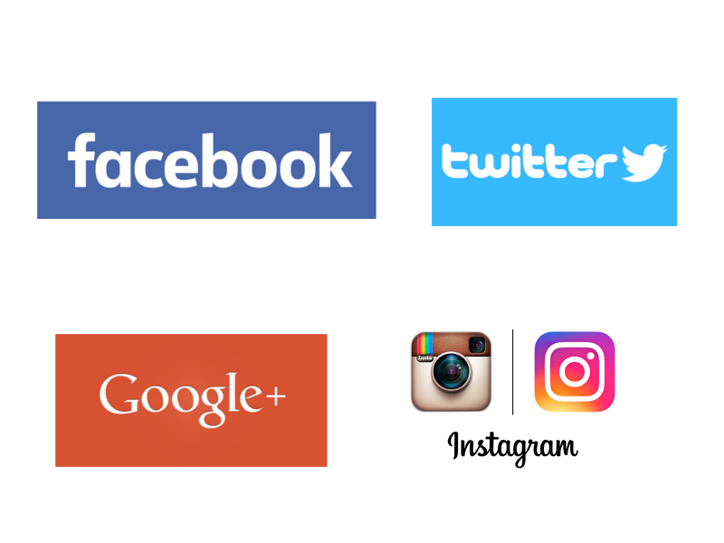
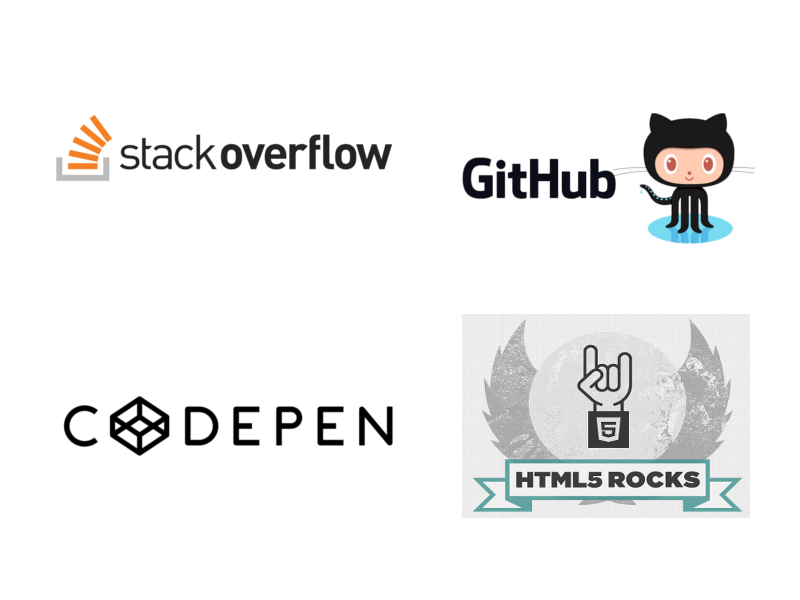

Personal Branding Para /^(?:Futuros)?$/ Desarrolladores
¿Quién soy?

Situación laboral
Chart by code.org
Situación laboral

Chart by code.org
Situación laboral

Situación laboral Euskadi
- ADE dejó de ser la titulación más demandada en 2015, ahora es Ingeniería Industrial
- Ingeniería Informática pasó de la quinta a la tercera posición en 2015, con el 2,2% de las ofertas vascas demandando esta formación.
Situación laboral (el otro lado)

Luis Iván Cuende
- Con 12 años creó un sistema operativo basado en Linux, de nombre Asturix
- Con 17 años funda Cardwee y lanzan aplicación para crear y almacenar tarjetas de fidelización

Jorge Izquierdo
- Con 13 años colocó dos aplicaciones en AppStor y Apple le seleccionó para acudir a su conferencia para desarrolladores en San Francisco
- Con 16 años funda Cardwee junto con Luis Cuende

Javier Agüera
- Funda GeeksPhone con 16 años
- En 2010 su dispositivo GeeksPhone One se había convertido en el primer smartphone europeo para Android.

Horacio Martos y Andrés Bou
- Fundaron Social Point con 23 años
- Su juego Dragon City alcanzó el número #7 en Facebook con 19,2 millones de usuarios al mes
Situación laboral (el otro lado)

Puedes ser el mejor desarrollador del mundo, pero si nadie sabe que existes, no podrás explotar tu gran potencial.
Marketing 
Marketing
Conectar a alguien que tiene algo con alguien que lo necesita
Personal Branding
La entrevista de trabajo
¿Cómo lo hago?
Retos
Destacar
Retos
Que te crean

Una imagen Unas líneas de código valen más que mil palabras
Desarrolladores VS Cirujanos
Las empresas buscan desarolladores, no aspirantes a desarrollador
Ejemplos
- Una web personal.
- Un blog.
- Proyecto propio: librerías, plugins,...
- Colabora con proyectos Open Source
Y no te olvides de...
¡Contarlo!
Mi pequeño caso de éxito: SIDR
Las Redes sociales
Las Redes sociales
Las Redes sociales
¡Desvirtualizate!
Conferencias, meetups,...
/^(?:Futuros)?$/ Desarrolladores
Por donde empezar
Yo elijo Startup
¡Gracias!
Slides: https://www.berriart.com/talks/personal-branding-developers/
Home Image: Luis Llerena | Unsplash